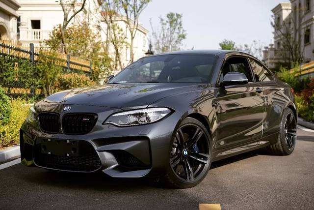
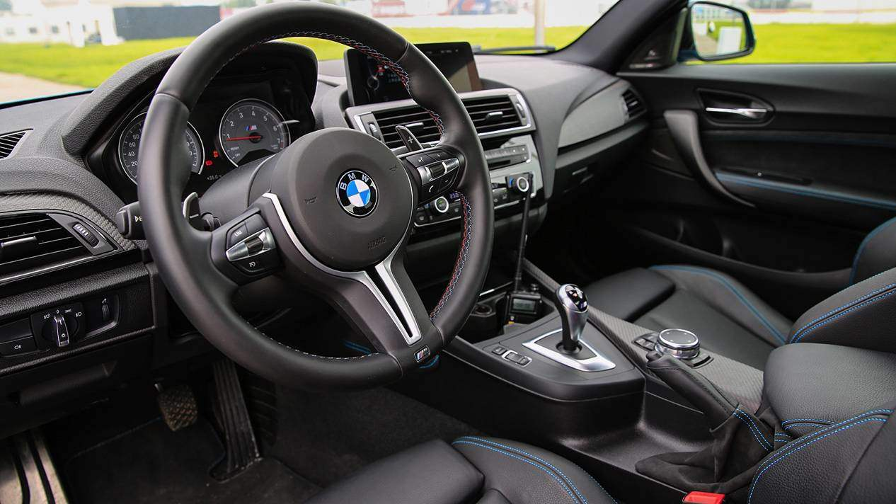

The letter M in a BMW stands for exceptional athleticism,
exclusivity and craftsmanship, as well as excellent driving and
personal style. In addition to designing and manufacturing M-series
high-performance vehicles,


BMW M2
BMW M: The BMWM model is the ultimate expression of BMW's design philosophy:
high performance, racing character and pure driving pleasure, while at the same
time being suitable for daily driving. These unique features have earned BMWM models
numerous fanatical supporters around the world.The competitors of BMW M series are
Mercedes-Benz AMG, Audi RS and so on.
M2: M2 is one of the M series, which is very popular because of its excellent cost performance and short body.
It has the M series engine, the M series appearance package, and the most exciting M steering wheel.